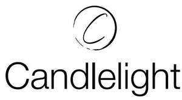

Trade Mark Journal No.2025/021 23 May 2025
UK00004200772 8 May 2025 (3,4,8,11,20,21,24,26,35)

- Class 3
- Scented oils; Scented wax melts; Wax melts being fragrancing preparations; incense; incense cones; pine oil; scented wood; essential oils of cedarwood; essential oils of lemon; essential oils; ethereal oils; lavender gel; rose oil; perfumery and fragrances; massage candles for cosmetic purposes; cleaning sprays; cleaning preparations; cleaning fluids; impregnated cleaning pads impregnated with toilet preparations; impregnated cleaning cloths impregnated with toilet preparations; cloths impregnated with a detergent for cleaning; pads impregnated with a detergent for cleaning; wiping cloth impregnated with a cleaning preparation for cleaning eye glasses; cleaning preparations for cleansing drains; cleaning foam; furniture polish; metal polish; polish; degreasers for cleaning purposes; laundry bleach; cleaning preparations for household purposes; household bleach; liquid laundry detergents; dishwashing detergents; laundry detergents; dishwasher detergents; cotton wool for cosmetic purposes; household detergents; soap; cleaning chalk; oven cleaning preparations; floor cleaning preparations; cleaning and fragrancing preparations; foam cleaning preparations; cosmetics; perfumes; shampoos; non-medicated preparations all for the care of skin, hair and scalp; toothpastes; non-medicated bath preparations; cosmetic facial masks; impregnated cleaning pads impregnated with cosmetics; pre-moistened cosmetic tissues; wipes impregnated with a skin cleanser; cloths impregnated with a skin cleanser; tissues impregnated with a skin cleanser.
- Class 4
- Candles; lighter fluid; solid fire starters; fire lighters; wood shavings for lighting fires; fuel for pyrophoric lighters; cigarette lighter fluid; lighter fluid for charcoal; butane for lighting; barbecue liquid lighters; fuel for pyrophoric lighters; fuels and illuminants; fuel for oil lamps; lubricants and industrial greases, waxes and fluids; sumac wax [sumach wax]; carnauba wax; wax for making candles; belting wax; wax [raw material]; wax [raw material]; illuminating wax; illuminating wax; perfumed candles; perfumed candles; tealights; tallow candles; candles; soy candles; candles; floating candles; table candles; wicks for candles; candle assemblies; candle torches; Christmas tree candles; fruit candles; candles in tins; tapers for lighting; votive candles; candles for lighting; nightlights [candles]; special occasion candles; aromatherapy fragrance candles; grave candles, non-electric; wicks for candles; candles containing insect repellent; wicks for candles and lamps; candle torches; musk scented candles; candles for use in the decoration of cakes; beeswax for use in the manufacture of candles; candles for absorbing smoke; candles for use as nightlights; Christmas tree decorations for illumination [candles]; parts and fittings for all the aforesaid goods.
- Class 8
- Cutlery; table forks; spoons; table-knife; ice picks; tableware being knives, forks and spoons; table cutlery; tables services comprising knives, forks and/or spoons; scissors; silverware; razors; fish bone tweezers; whetstones; whetstone holders; knife steels; salad forks, dinner forks, fish forks, dessert forks, cocktail forks, oyster forks, dinner knives, butter knives, fish knives, steak knives, teaspoons, soup spoons, dessert spoons, table spoons, bouillon spoons, demitasse spoons; dinnerware comprising knives, forks and spoons; flatware, namely, forks, knives and spoons; food dicers, hand-operated; hand-operated Vegetable slicers; fireplace tongs; fire irons; Hand-operated fruit slicers; hand-operated food dicers; hand-operated implements for chopping food; hand-operated food processors; non-electric food slicers; table cutlery other than knives; carving forks; carving knives; two-tined forks; parts and fittings for all the aforesaid goods.
- Class 11
- Apparatus and appliances for lighting; oil lighters; globes for lamps; electric lamps; fairy lights for festive decoration; decorative electric lighting apparatus; decorative lighting; desk lights; diffusers being parts of lighting installations; fluorescent electric light bulbs; led (light emitting diode) lighting fixtures; smart light bulbs; ’ lighting apparatus and installations; electric lights for Christmas trees; luminous house numbers; luminous tubes for lighting; lamps; lamp bases; lamp shades; electric lamps; burners for lamps; oil lamps; oil burners; electrical lamps for indoor lighting; candle lamps; luminaires for lighting; luminaires for outdoor lighting; organic light emitting diodes (OLED) lighting devices; solar cell lighting apparatus; electric torches for lighting; electric lighting; electrical lamps for outdoor lighting; smart refrigerators; electric cool boxes; gas lighters; gas grills; gas lights; apparatus and installations for heating, cooling, steam generating, cooking, drying, ventilating, water supply and sanitary purpose; Barbecue grills; Barbecues; Barbecue smokers; Grills for barbecuing; Ceramic briquettes for use in barbecue; grills; Cooking grills; parts and fittings for all the foregoing goods.
- Class 20
- Door handles of porcelain; Furniture, cushions, pillows, curtains; plastic, vinyl and cork place mats and coasters; picture frames; picture frame brackets; bins, not of metal; bottle racks; cases of wood or plastic; chests, not of metal; clothes hooks, not of metal; coat stands; statuettes of wood, wax, plaster or plastic; figurines of wood, wax, plaster of plastic; flower pot pedestals; flower stands; mirrors; silvered glass; jewellery cases, not of precious metal; magazine racks; wind chimes; mobiles; bakers' bread baskets; decorative wall plaques; umbrella stands; wooden ornaments; ornamental wooden animals, birds, fishes, seashells, flowers, vegetables, fruit and leaves; Wicker baskets, hamper baskets, log baskets, Furniture, Occasional furniture, vases, decorative lantern; parts and fittings for all of the aforesaid goods.
- Class 21
- Hand-operated food grinders; Bread baskets; Bread bins; food basters; incense burners; tealight burners; hurricane lamps (non-electrical); fragrant oil burners; candle extinguishers, not of precious metal; glass candlesticks; candle drip rings; non-electric candelabra; candle extinguishers; crockery; dishes; butter dishes; bowls; soup bowls; plates; side plates; cups; saucers; teapots; coffee pots; pots; pottery; vases; jugs; ornamental jugs; pot pourri bowls; rose bowls; fruit bowls; urns; mugs; covers for dishes; jars; cookie jars; ceramics for household purposes; ceramic tumblers; flower pots; plant pots; planters; holders for flowers and plants; covers, not of paper, for flower pots; bottle openers; corkscrews; candelabra; candle rings; candle snuffers; candlesticks; decanters; disposable serving spoons; painted glassware; glass stoppers; enamelled glass; glass jars; drinking glasses; glass bowls; mosaics of glass; crystal; napkin holders; napkin rings; soap dishes; soap dispensers; soap holders; perfume burners; perfume sprayers; fruit cups; egg cups; cruets; coasters, not of paper nor of table linen; containers for household or kitchen use; stands for shaving brushes; China, porcelain, and earthenware ornaments; ornamental animals, birds, fishes and seashells; bath sponges; toothbrush holders; novelty toothbrush holders; nail brushes; toilet paper holders not made of precious metals; novelty toilet paper holders, not made of precious metals; toilet brushes; toilet brush holders, not made of precious metals; novelty toilet brush holders, not made of precious metals; floating candle dishes; cotton wool holders; kitchen utensil holders; novelty kitchen utensil holders. wooden bowls, wooden serving ware and wooden dinnerware; containers for household or kitchen use; utensils for household purposes; tableware, other than knives, forks, and spoons; kitchen utensils; cooking utensils, non-electric; daily glassware (including cups, plates, jugs, and jars); ceramics for household purposes; works of art of porcelain, ceramic, earthenware, terra-cotta, or glass; drinking vessels; liqueur sets; tea services [tableware]; coffee services [tableware]; thermally insulated containers for food; heat-insulated containers; bowls [basins]; bottles; services [dishes]; kitchen containers; chopsticks; chopstick rest; drinking glasses; vases; decanters; wine aerators; enamel plastic utensils for daily use (including basins, bowls, plates, pots, cups); trays for household purposes; Lazy Susans being a rotating tray; table plates; pottery; porcelain ware; heat-insulated containers for beverages; cooking utensils; soup bowls; goblets; basins; dish covers; moulds; pestles and mortars for kitchen use; coffee sets; tea sets; colanders; flasks; pot holders; servers; sifters; strainers; oven gloves; napkin and serviette rings; wooden serving and cooking utensils; mixing spoons; dinner services; Drink containers; beverage containers; drinkware; beverageware; drinking receptacles; drinking cups; glasses being drinking vessels; glasses being drinking vessels made of plastic; glasses being drinking vessels made of plastic polycrystal; glasses, drinking vessels and barware; drinking cups not of precious metal; tumblers for use as drinking glasses; stemware; glasses being receptacles; wine glasses; cocktail glasses; beer glasses; whisky glasses; pint glasses; domestic utensils and containers; cooking dishes; trays; bakeware; baking tins; articles for use in cooking; Household utensils; glassware being stemware, pottery, ceramics, Chinaware, porcelain and earthenware all being articles of crockery; articles of crockery; tableware, other than knives, forks and spoons; baking dishes; candy dishes; covers for dishes; insulated lids for plates and dishes; microwave-proof dishes; roasting dishes; tableware of plastics; table ware of wood; tableware of metal; ovenware, oven to tableware, servingware namely dishes for serving food; servingware namely vessels for serving drinks; serving dishes; serving platters; serving platters, not of precious metal; serving platters of precious metal; serving bowls; boards, plates, and trenchers for serving or presenting food; portable beverage dispensers namely containers; sauce boats; butter coolers; caviar coolers; coolers for wine, non-electric; non-electric portable beverage coolers; portable beverage coolers, non-electric; citrus juicers; fruit juice extractors, non electric; juice box holders made of plastic; juice squeezers; cake plates; cake stands, dish stands; stands for the display of food; plant containers, vases; pans; broiling pans being grills in the nature of cooking utensils; pancake pans; grill pans; sauté pans; crepe pans; asparagus pans; pasta pans; griddle pans; baking pans; casserole dishes; casserole pans; pump dispensers for condiments; vacuum flasks; vacuum bottles; vacuum pumps for wine bottles; vacuum bottle stoppers specially adapted for use with wine bottles; carving boards; holders for carving boards; sundae dishes; trifle dishes; vegetable dishes; blenders, non-electric, for food preparation; cold packs for chilling food and beverages; cold packs used to keep food and drink cold; food blenders, non-electric; food cloches; food containers made of foil; food domes; food mixers, non-electric; food preserving jars of glass; food storage jars; household containers for foods; insulated bags for food or beverages, for domestic use; insulated bags for food or beverages, for household purposes; insulated containers for food or beverages, for household purposes; insulated containers for food or beverages, for domestic use; insulated containers for food or beverages, for household use; lockable household containers, not of metal, for food; non electric portable ice chests for food and beverages; reusable silicone food covers; tiered food servers; thermal insulated bags for food or beverages; thermal insulated containers for food; thermal insulated containers for food or beverages; thermal insulated tote bags for food or beverages; thermally insulated containers for food or beverages; serving plates; serving utensils; tiered serving platters; disposable serving trays; serving trays made of rattan; serving trays, not of precious metal; serving trays of precious metal; serving tongs; asparagus serving tongs; meat serving tongs; barbecue serving tongs; bread serving tongs; ladles for serving wine; serving ladles; serving spoons, serving forks, pasta serving forks ; ladles, pasta servers, pie servers, tongs, turners, basting spoons, slotted serving spoons; ice-cream scoopers, two-tined serving fork; household utensils; household utensils of pottery, glass, ceramics, porcelain, metal, plastics, melamine, wood, stone or earthenware; tableware; tableware of pottery, glassware, ceramics, porcelain, metal, plastics, melamine, wood, stone or earthenware; ovenware; oven to tableware; cookware; chopping boards; dishes used in serving, drinking and eating food and beverages, namely, plates, bowls, glasses, cups, table plates, charger plates, dinner plates, lunch plates, dessert plates, salad plates, side plates, service plates, cheese plates, tea plates, fruit plates, soup bowls, cereal bowls, pasta bowls, fruit bowls, dessert bowls, bouillon cups, coupe soup bowls, finger bowls, teacup saucers, coffee cup saucers, demitasses saucers, cream soup bowl saucers, water glasses, wine glasses, beer glasses, liqueur glasses, mugs, tea cups, coffee cups, demitasse cups, cocktail glasses, dessert glasses, tureen, ramekins, chafing dishes, coffee urns, punch bowls, wine decanters, carafes, pitchers, beverage servers, cereal dispensers, display risers, gravy boats, sugar bowl, salt shaker, pepper shaker, candle holders, sugar packet holders, cream pitchers; towel rings; parts and fittings for the aforesaid goods.
- Class 24
- Curtain fabric, bed linen, blankets; blanket throws; bed throws; throws being furniture coverings; bedspreads; duvet covers, quilt covers, textiles, non-woven textile articles, cushion covers; curtains; covers for cushions; bath linen; table cloths of textile table linen; textile place mats; throws; loose covers for furniture; parts and fittings for the aforesaid goods.
- Class 26
- Artificial flowers; artificial garlands; wreaths of artificial flowers; bunches of artificial flowers; artificial flowers displayed in frames; parts and fittings for the aforesaid goods.
- Class 35
- Retail services, online retail service, Mail order retail services and wholesale retail services in relation to Matches, safety matches, cigarette lighters, flints for lighters, wicks for lighters, pocket lighters not of precious metal, ashtrays, pyrophoric lighters; Retail services, online retail service, Mail order retail services and wholesale retail services in relation to Scented oils, Scented wax melts, Wax melts being fragrancing preparations, incense, incense cones, pine oil, scented wood, essential oils of cedarwood, essential oils of lemon, essential oils, ethereal oils, lavender gel, rose oil, perfumery and fragrances, massage candles for cosmetic purposes, cleaning sprays, cleaning preparations, cleaning fluids, impregnated cleaning pads impregnated with toilet preparations, impregnated cleaning cloths impregnated with toilet preparations, cloths impregnated with a detergent for cleaning, pads impregnated with a detergent for cleaning, wiping cloth impregnated with a cleaning preparation for cleaning eye glasses, cleaning preparations for cleansing drains, cleaning foam, furniture polish, metal polish, polish, degreasers for cleaning purposes, laundry bleach, cleaning preparations for household purposes, household bleach, liquid laundry detergents, dishwashing detergents, laundry detergents, dishwasher detergents, cotton wool for cosmetic purposes, household detergents, soap, cleaning chalk, oven cleaning preparations, floor cleaning preparations, cleaning and fragrancing preparations, foam cleaning preparations, cosmetics, perfumes, shampoos, non-medicated preparations all for the care of skin, hair and scalp, toothpastes, non-medicated bath preparations, cosmetic facial masks, impregnated cleaning pads impregnated with cosmetics, pre-moistened cosmetic tissues, wipes impregnated with a skin cleanser, cloths impregnated with a skin cleanser, tissues impregnated with a skin cleanser; Retail services, online retail service, Mail order retail services and wholesale retail services in relation to Candles, lighter fluid, solid fire starters, fire lighters, wood shavings for lighting fires, fuel for pyrophoric lighters, cigarette lighter fluid, lighter fluid for charcoal, butane for lighting, barbecue liquid lighters, fuel for pyrophoric lighters, fuels and illuminants, fuel for oil lamps, lubricants and industrial greases, waxes and fluids, sumac wax [sumach wax], carnauba wax, wax for making candles, belting wax, wax [raw material], wax [raw material], illuminating wax, illuminating wax, perfumed candles, perfumed candles, tealights, tallow candles, candles, soy candles, candles, floating candles, table candles, wicks for candles, candle assemblies, candle torches, Christmas tree candles, fruit candles, candles in tins, tapers for lighting, votive candles, candles for lighting, nightlights [candles], special occasion candles, aromatherapy fragrance candles, grave candles, non-electric, wicks for candles, candles containing insect repellent, wicks for candles and lamps, candle torches, musk scented candles, candles for use in the decoration of cakes, beeswax for use in the manufacture of candles, candles for absorbing smoke, candles for use as nightlights, Christmas tree decorations for illumination [candles]; Retail services, online retail service, Mail order retail services and wholesale retail services in relation to Cutlery, table forks, spoons, table-knife, ice picks, tableware being knives, forks and spoons, table cutlery, tables services comprising knives, forks and/or spoons, scissors, silverware, razors, fish bone tweezers, whetstones, whetstone holders, knife steels, salad forks, dinner forks, fish forks, dessert forks, cocktail forks, oyster forks, dinner knives, butter knives, fish knives, steak knives, teaspoons, soup spoons, dessert spoons, table spoons, bouillon spoons, demitasse spoons, dinnerware comprising knives, forks and spoons, flatware, namely, forks, knives and spoons, food dicers, hand-operated, hand-operated Vegetable slicers, fireplace tongs, fire irons, Hand-operated fruit slicers, hand-operated food dicers, hand-operated implements for chopping food, hand-operated food processors, non-electric food slicers, table cutlery other than knives, carving forks, carving knives, two-tined forks; Retail services, online retail service, Mail order retail services and wholesale retail services in relation to Apparatus and appliances for lighting, oil lighters, globes for lamps, electric lamps, fairy lights for festive decoration, decorative electric lighting apparatus, decorative lighting, desk lights, diffusers being parts of lighting installations, fluorescent electric light bulbs, led (light emitting diode) lighting fixtures, smart light bulbs,’ lighting apparatus and installations, electric lights for Christmas trees, luminous house numbers, luminous tubes for lighting, lamps, lamp bases, lamp shades, electric lamps, burners for lamps, oil lamps, oil burners, electrical lamps for indoor lighting, candle lamps, luminaires for lighting, luminaires for outdoor lighting, organic light emitting diodes (OLED) lighting devices, solar cell lighting apparatus, electric torches for lighting, electric lighting, electrical lamps for outdoor lighting, smart refrigerators, electric cool boxes, gas lighters, gas grills, gas lights, apparatus and installations for heating, cooling, steam generating, cooking, drying, ventilating, water supply and sanitary purpose, Barbecue grills, Barbecues, Barbecue smokers, Grills for barbecuing, Ceramic briquettes for use in barbecue, grills, Cooking grills; Retail services, online retail service, Mail order retail services and wholesale retail services in relation to Furniture, cushions, pillows, curtains, plastic, vinyl and cork place mats and coasters, picture frames, picture frame brackets, bins, not of metal, bottle racks, cases of wood or plastic, chests, not of metal, clothes hooks, not of metal, coat stands, statuettes of wood, wax, plaster or plastic, figurines of wood, wax, plaster of plastic, flower pot pedestals, flower stands, mirrors, silvered glass, jewellery cases, not of precious metal, magazine racks, wind chimes, mobiles, bakers' bread baskets, decorative wall plaques, umbrella stands, wooden ornaments, ornamental wooden animals, birds, fishes, seashells, flowers, vegetables, fruit and leaves, towel rings, Wicker baskets, hamper baskets, log baskets, Furniture, Occasional furniture, vases, decorative lanterns; Retail services, online retail service, Mail order retail services and wholesale retail services in relation to Hand-operated food grinders, Bread baskets, Bread bins, food basters, incense burners, tealight burners, hurricane lamps (non-electrical), fragrant oil burners, candle extinguishers, not of precious metal, glass candlesticks, candle drip rings, non-electric candelabra, candle extinguishers, crockery, dishes, butter dishes, bowls, soup bowls, plates, side plates, cups, saucers, teapots, coffee pots, pots, pottery, vases, jugs, ornamental jugs, pot pourri bowls, rose bowls, fruit bowls, urns, mugs, covers for dishes, jars, cookie jars, ceramics for household purposes, ceramic tumblers, flower pots, plant pots, planters, holders for flowers and plants, covers, not of paper, for flower pots, bottle openers, corkscrews, candelabra, candle rings, candle snuffers, candlesticks, decanters, painted glassware, glass stoppers, enamelled glass, glass jars, drinking glasses, glass bowls, mosaics of glass, crystal, napkin holders, napkin rings, soap dishes, soap dispensers, soap holders, perfume burners, perfume sprayers, fruit cups, egg cups, cruets, coasters, not of paper nor of table linen, containers for household or kitchen use, stands for shaving brushes, door handles of porcelain, China, porcelain, and earthenware ornaments, ornamental animals, birds, fishes and seashells, bath sponges, toothbrush holders, novelty toothbrush holders, nail brushes, toilet paper holders not made of precious metals, novelty toilet paper holders, not made of precious metals, toilet brushes, toilet brush holders, not made of precious metals, novelty toilet brush holders, not made of precious metals, floating candle dishes, cotton wool holders, kitchen utensil holders, novelty kitchen utensil holders. wooden bowls, wooden serving ware and wooden dinnerware, containers for household or kitchen use, utensils for household purposes, tableware, other than knives, forks, and spoons, kitchen utensils, cooking utensils, non-electric, daily glassware (including cups, plates, jugs, and jars), ceramics for household purposes, works of art of porcelain, ceramic, earthenware, terra-cotta, or glass, drinking vessels, liqueur sets, tea services [tableware], coffee services [tableware], thermally insulated containers for food, heat-insulated containers, bowls [basins], bottles, services [dishes], kitchen containers, chopsticks, chopstick rest, drinking glasses, vases, decanters, wine aerators, enamel plastic utensils for daily use (including basins, bowls, plates, pots, cups), trays for household purposes, Lazy Susans being a rotating tray, table plates, pottery, porcelain ware, heat-insulated containers for beverages, cooking utensils, soup bowls, goblets, basins, dish covers, moulds, pestles and mortars for kitchen use, coffee sets, tea sets, colanders, flasks, pot holders, servers, sifters, strainers, oven gloves, napkin and serviette rings, wooden serving and cooking utensils, mixing spoons, dinner services, Drink containers, beverage containers, drinkware, beverageware, drinking receptacles, drinking cups, glasses being drinking vessels, glasses being drinking vessels made of plastic, glasses being drinking vessels made of plastic polycrystal, glasses, drinking vessels and barware, drinking cups not of precious metal, tumblers for use as drinking glasses, stemware, glasses being receptacles, wine glasses, cocktail glasses, beer glasses, whisky glasses, pint glasses, domestic utensils and containers, cooking dishes, trays, bakeware, baking tins, articles for use in cooking, Household utensils, glassware being stemware, pottery, ceramics, Chinaware, porcelain and earthenware all being articles of crockery, articles of crockery, tableware, other than knives, forks and spoons, baking dishes, candy dishes, covers for dishes, insulated lids for plates and dishes, microwave-proof dishes, roasting dishes, tableware of plastics, table ware of wood, tableware of metal, ovenware, oven to tableware, servingware namely dishes for serving food, servingware namely vessels for serving drinks, serving dishes, serving platters, serving platters, not of precious metal, serving platters of precious metal, serving bowls, boards, plates, and trenchers for serving or presenting food, portable beverage dispensers namely containers, sauce boats, butter coolers, caviar coolers, coolers for wine, non-electric, non-electric portable beverage coolers, portable beverage coolers, non-electric, citrus juicers, fruit juice extractors, non electric, juice box holders made of plastic, juice squeezers, cake plates, cake stands, dish stands, stands for the display of food, plant containers, vases, pans, broiling pans being grills in the nature of cooking utensils, pancake pans, grill pans, sauté pans, crepe pans, asparagus pans, pasta pans, griddle pans, baking pans, casserole dishes, casserole pans, pump dispensers for condiments, vacuum flasks, vacuum bottles, vacuum pumps for wine bottles, vacuum bottle stoppers specially adapted for use with wine bottles, carving boards, holders for carving boards, sundae dishes, trifle dishes, vegetable dishes, blenders, non-electric, for food preparation, cold packs for chilling food and beverages, cold packs used to keep food and drink cold, food blenders, non-electric, food cloches, food containers made of foil, food domes, food mixers, non-electric, food preserving jars of glass, food storage jars, household containers for foods, insulated bags for food or beverages, for domestic use, insulated bags for food or beverages, for household purposes, insulated containers for food or beverages, for household purposes, insulated containers for food or beverages, for domestic use, insulated containers for food or beverages, for household use, lockable household containers, not of metal, for food, non electric portable ice chests for food and beverages, reusable silicone food covers, tiered food servers, thermal insulated bags for food or beverages, thermal insulated containers for food, thermal insulated containers for food or beverages, thermal insulated tote bags for food or beverages, thermally insulated containers for food or beverages, serving plates, serving utensils, tiered serving platters, disposable serving trays, serving trays made of rattan, serving trays, not of precious metal, serving trays of precious metal, serving tongs, asparagus serving tongs, meat serving tongs, barbecue serving tongs, bread serving tongs, ladles for serving wine, serving ladles, serving spoons, serving forks, pasta serving forks ,ladles, pasta servers, pie servers, tongs, turners, basting spoons, slotted serving spoons, disposable serving spoons, ice-cream scoopers, two-tined serving fork, household utensils, household utensils of pottery, glass, ceramics, porcelain, metal, plastics, melamine, wood, stone or earthenware, tableware, tableware of pottery, glassware, ceramics, porcelain, metal, plastics, melamine, wood, stone or earthenware, ovenware, oven to tableware, cookware, chopping boards, dishes used in serving, drinking and eating food and beverages, namely, plates, bowls, glasses, cups, table plates, charger plates, dinner plates, lunch plates, dessert plates, salad plates, side plates, service plates, cheese plates, tea plates, fruit plates, soup bowls, cereal bowls, pasta bowls, fruit bowls, dessert bowls, bouillon cups, coupe soup bowls, finger bowls, teacup saucers, coffee cup saucers, demitasses saucers, cream soup bowl saucers, water glasses, wine glasses, beer glasses, liqueur glasses, mugs, tea cups, coffee cups, demitasse cups, cocktail glasses, dessert glasses, tureen, ramekins, chafing dishes, coffee urns, punch bowls, wine decanters, carafes, pitchers, beverage servers, cereal dispensers, display risers, gravy boats, sugar bowl, salt shaker, pepper shaker, candle holders, sugar packet holders, cream pitchers; Retail services, online retail service, Mail order retail services and wholesale retail services in relation to Curtain fabric, bed linen, blankets, blanket throws, bed throws, throws being furniture coverings, bedspreads, duvet covers, quilt covers, textiles, non-woven textile articles, cushion covers, curtains, covers for cushions, bath linen, table cloths of textile table linen, textile place mats, throws, loose covers for furniture; Retail services, online retail service, Mail order retail services and wholesale retail services in relation to artificial flowers, artificial garlands, wreaths of artificial flowers, bunches of artificial flowers, artificial flowers displayed in frames.
CANDLELIGHT PRODUCTS LIMITED
Representative: Swindell & Pearson Limited